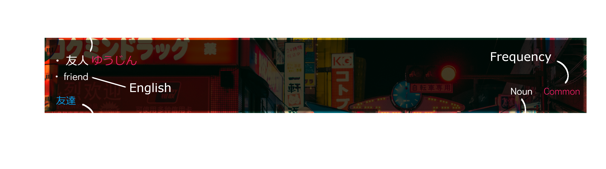

AnkiJisho is unique from other Japanese English dictionary websites in that after finding the word you search for, you have the opportunity to save and insert them into folders of your choosing, and then practice those very words as flashcards all in one place! Whether you are a beginner to Japanese looking to broaden your vocabulary, a veteran trying to keep track of rare and unique words, or even a native Japanese speaker learning English, AnkiJisho makes it easy to keep track and remember new vocabulary words.
AnkiJisho is very easy to use, on the home screen you can search for any word in either English or Japanese, including Kanji, and you will be returned with up to 20 dictionary entries. For each entry, there will be the Japanese translation in both the spoken (Hiragana and/or Katakana) and the written (Kanji) if available, the English definitions, frequency (indicated by the Common tag in red), synonyms in blue, and part of speech. When hovering the cursor over the word card, the save icon will appear in the top-right corner and upon clicking the icon the word will be saved in your "saved" library, which you can access in the nav bar at the top.

In your saved library are all of the words you have saved, and if you choose you can search for words within your library only. Upon clicking the "practice" button, you will be presented with the flashcard page, where you can practice your recollection of all the words you have saved.
For each flashcard you will be presented with a random word in Japanese first and then, when you have decided on the answer, clicking the reveal button will reveal the English translation of the word. If you got it right, clicking the "right" button will put that card away and bring you to the next word. If you missed the word, clicking on the "wrong" button will move that card to the end of your flashcard deck to be brought up again at the end. When you have finished all cards in your deck you will be presented with your score, how many you answered correctly in blue and how many missed in red.